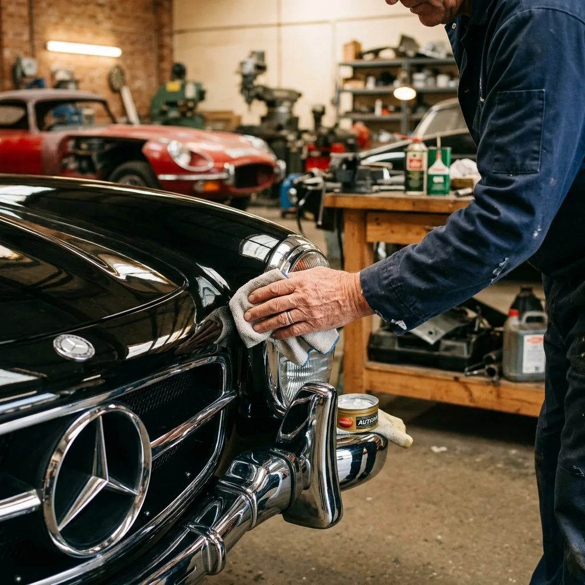

Efsanelere Hayat Veriyoruz
Klasik araç restorasyonu sıradan bir onarım işlemi değil; geçmişe saygı duymayı, sabrı ve sanatsal bir dokunuşu gerektiren uzun soluklu bir süreçtir. NeTT atölyesinde, klasik otomobillerin kaporta ve boya işlemlerini aceleye getirmeden, dönemin ruhuna sadık kalarak gerçekleştiriyoruz.
ÖÖzellikle çürümüş sac panellerin aslına uygun şekilde yeniden üretilmesi, şasenin kumlanıp korozyondan arındırılması ve eski boya formüllerinin günümüz teknolojisiyle eşleştirilmesi uzmanlık alanımızdır. 1957 Chevrolet Bel Air gibi ikonik modellerin tam restorasyon projelerinde kanıtlanmış bir başarı geçmişine sahibiz.

Restorasyon Sürecimiz
- Detaylı Söküm ve Arındırma: Araçcın tamamen soyulması, kumlama ile eski boya, macun ve pasın temizlenmesi.
- Kaporta İhyası: Çürük panellerin aslına uygun formda bükülüp kaynatılması, orijinal hatların çıkarılması.
- Epoksi Astar ve İzolasyon: Sacın oksijenle temasını kesen, ömürlük korozyon koruması sağlayan epoksi zemin.
- Fırınlı Klasik Boya: Akrilik veya su bazlı sistemlerle, fabrikasyon renk tonunun spektrofotometre ile elde edilip uygulanması.
Proje Yönetimi ve Şeffaflık
Restorasyon projeleri aylar sürebilir. Bu süreçte araç sahiplerini düzenli aralıklarla atölyemize davet ediyor, her aşamayı detaylı fotoğraflarla arşivleyerek raporluyoruz. Restorasyon bittiğinde, aracınızın yapım aşamalarını içeren bir portfolyoya da sahip oluyorsunuz.


PROJENİZİ BİRLİKTE KONUŞALIM
Klasik aracınız için restorasyon hayaliniz varsa, Akdeniz Sanayi'deki atölyemize bir kahve içmeye bekliyoruz.